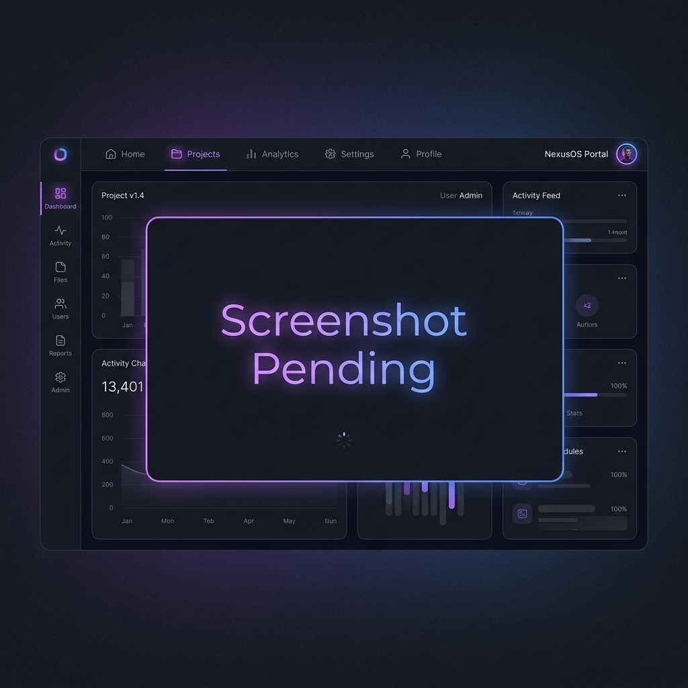

A self-hosted, personal job application tracker built as a kanban board with full local data persistence, headless browser page caching, and a floating notes pad.

Drag job cards smoothly through custom columns (Applied → Screening → Interview → Offer → Rejected) with real-time state updates.
Leverages a headless Puppeteer browser instance to render and cache a permanent PDF copy of active job listings before they go offline.
Includes a floating, draggable prep notepad to draft cover notes and prepare for interview questions, auto-saved to disk and local storage.
Saves all state to plain JSON on disk. Automatically creates daily snapshots with a 14-day retention cycle and rolls backups before every write.
# Deploy JobBoard via Docker Compose
mkdir -p data/backups cache
docker compose up -d
| Component | Implementation | Benefit |
|---|---|---|
| Backend Server | Node.js 20 & Express REST endpoints | High-performance, lightweight script execution |
| PDF Page Service | Headless Puppeteer (Chromium engine) | Accurate capturing of complex, interactive job boards |
| Persistence Layer | Local JSON files + atomic write queue | Zero-config database dependency with absolute data ownership |
| Build System | Vanilla HTML5 / CSS3 / ES6 Frontend | No bundlers or transpilations required, instant serving and load speeds |